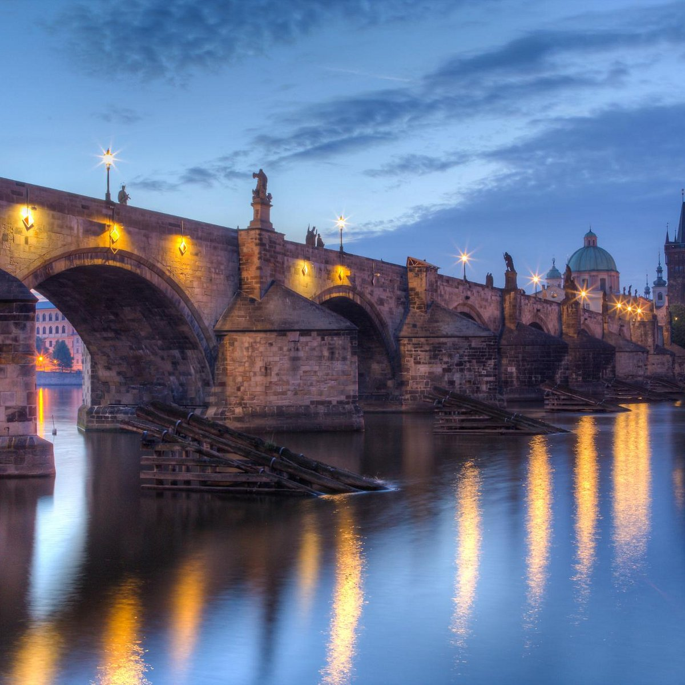
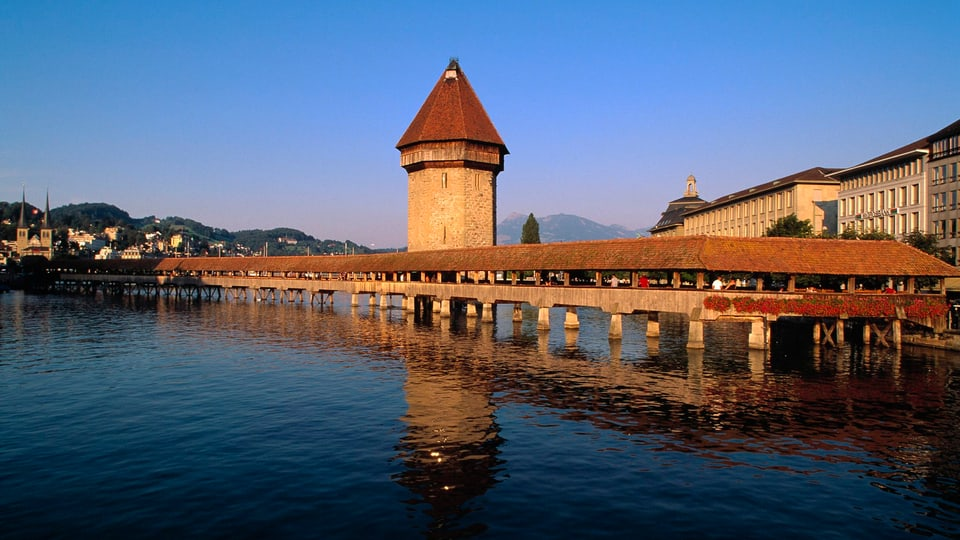

The Alcántara Bridge has suffered more damage from war than from the elements over the years. The
Moors destroyed one of the smallest arches in 1214 although this was rebuilt centuries later, in
1543, with stone taken from the original quarries. The second arch on the northwest side was then
later destroyed in 1760 by the Spanish to stop the Portuguese advancing and was repaired in 1762 by
Charles III.
Read More

Throughout its history, Charles Bridge has suffered several disasters and witnessed many
historic
events.
Czech legend has it that construction began on Charles Bridge at 5:31am on 9 July 1357 with the first
stone being laid by Charles IV himself. This exact time was very important to the Holy Roman Emperor
because he was a strong believer in numerology and felt that this specific time, which formed a
palindrome (1357 9/7 5:31)
Read More
Chengyang is a cluster of eight villages in a small river valley, in hilly country about five
hours
northwest of Guilin. It is about 18 kilometers north of Sanjiang on the Linxi River. The township is a
farming community with tea plantations in the hills and fields next to the river. The villages are
clusters of wooden structures, and the whole view is idyllic. Chengyang has a covered bridge, the
Chengyang Wind and Rain Bridge, over the river. The bridge is built on five thick pillars, and atop each
pillar are multi-story wooden structures with layered roofs. It is unusual architecture.
Read More

Part of the bridge complex is the octagonal 34.5 m (113 ft) tall (from ground) Wasserturm ,
which
translates to "water tower," in the sense of 'tower standing in the water.' The tower pre-dated the
bridge by about 30 years. Over the centuries, the tower has been used as a prison, torture chamber, and
later a municipal archive as well as a local treasury.Today, the tower is closed to the public,
although it houses a local artillery association and a tourist gift shop.
Read More